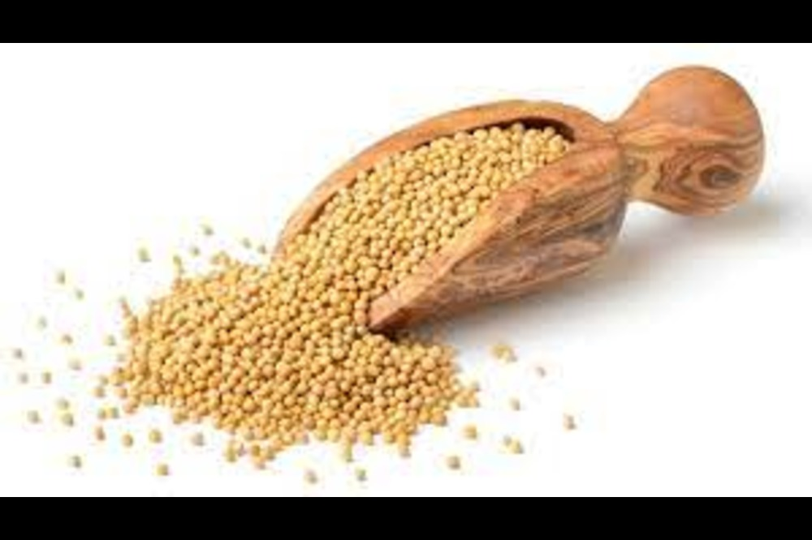
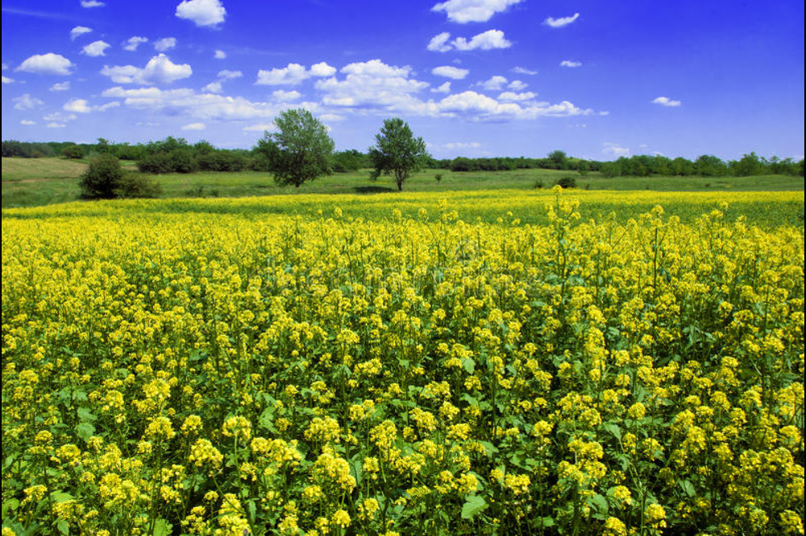
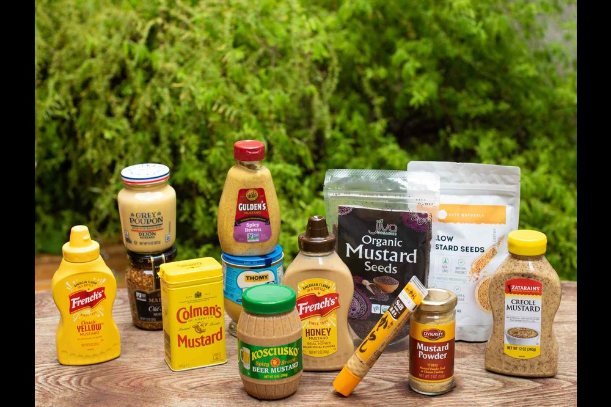

Mustard
The mustard plant is any one of several plant species in the genera Brassica and Sinapis in the family Brassicaceae (the mustard family). Mustard seed is used as a spice. Grinding and mixing the seeds with water, vinegar, or other liquids creates the yellow condiment known as prepared mustard. The seeds can also be pressed to make mustard oil, and the edible leaves can be eaten as mustard greens.
Cost of Planting Mustard
On an average total cost of cultivation involved in one acre Mustard cultivation is Rs. 9, 493. Cost involved in cultivation of Mustard may vary from above mentioned cost depending upon various factors like variety used pest and disease incidence and weed incidence etc.
Return after selling Mustard
Market price for Mustard dated on 24-10-2019 is Rs. 4,025 per quintal at Alwal market center in Rajasthan. So, for selling 8 quintals of Mustard farmer will get gross returns of Rs. 32, 200.